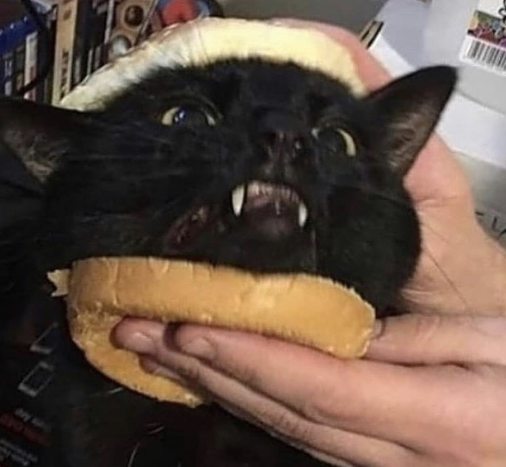

My hobbys include Gaming, Coding, Drawing, Reading, and Writing.

Far Cry 5 is, in my opinion, one of the best video games out there. It has everything: An amazing story, engaging gameplay, and is fun. It's always nice to drive around listening to the goated soundtrack while blowing up cultists.
Ubisoft also had some extended support for the game by introducing Far Cry Arcade. An actual multiplayer system that wasn't just an afterthough like the original co-op in story mode was. Now the game is fun both casually and competitively.
When I play games, most of the time it's with other people. I usually play a lot of Rainbow Six Siege and Dead by Daylight. I have been branching out but if it's not a multiplayer game that I have in common with my friends I probably don't play it all too much. That doesn't mean I don't like it, just that I don't play it that often.
I'm not the best at sketching either, but I do enjoy it. I like making concept art for games, like this imagining of springtrap in Dead by Daylight.